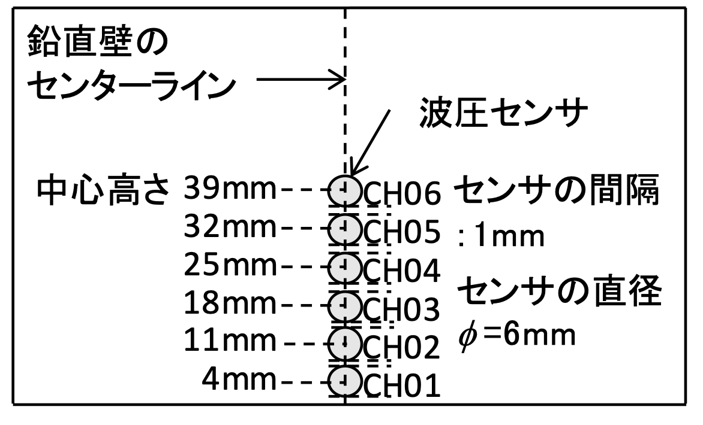

課題５ 鉛直壁に作用するダムブレイク流れの衝突波圧
概要
水谷ら(2017)による陸上構造物へ作用する津波波圧を対象とした水理模型実験の再現計算を行う．本課題では，ゲート急開により発生させた段波津波が斜面を遡上し，鉛直二次元壁に衝突する現象を取り扱い，壁面衝突後に打ち上がった水塊が落下着水する際の波圧特性に着目し，その再現性を検証する．
内容
陸上を遡上する津波が構造物に衝突する場合，最初に津波の先端が構造物に衝突し，構造物の基底部に衝撃波圧を発生させる．また，構造物に衝突した津波先端部は，その後構造物に沿って打ち上がり，後続する流れの上に落水を繰り返して準定常状態へと移行する．この準定常状態における圧力分布は持続波圧と呼ばれる．津波波力の最大値はこうした衝撃波圧や持続波圧発生時ではなく，その遷移過程で生じる場合がある．そこで水谷ら(2017)は，壁面衝突後に打ち上がった水塊が落下着水する際の波圧特性に着目した水理模型実験を行っており，本課題ではこの水理模型実験の再現計算を行う．
実験方法および実験条件を以下に示す．鉛直壁に作用するダムブレイク流れの衝突波圧を計測した．実験装置を図-1に示す．水路は長さ3.3m×幅0.39mであり，水路内には1/40勾配のアクリル斜面（長さ2.0m×高さ0.05m）が設置され，斜面後端に水平床が接続されている．波圧は水平床上に設置された鉛直壁中央での波圧である．波圧計の設置位置を図-2に示す．
表-1に示すように，貯水位Hを6.0cmから11.0cmに変化させて実験を行った．表には鉛直壁を設置しない状態で計測した，進行波の最大水位hmaxを併せて記載している．波圧データのサンプリング周波数は10kHzであり，同じ条件で10回以上行ったそれぞれの波圧の時系列データをアンサンブル平均した．その際，波圧の立ち上がり時刻をゼロとして時間調整を行っている．
本課題では表-1に示す実験ケースの内，貯水位H=9.0cmのケースを対象とする．
比較方法
事前準備用の実験データとして，貯水位H=8.0cmのケースのデータが津波防災研究ポータルサイトのベンチマーク問題として公開予定（公開時期は決まり次第お知らせします）であり，計算モデルの精度を確認することができる．
本ハッカソンでは，貯水位H=9.0cmのケースを対象とし，直立壁前面の波圧の時系列を比較する（比較する計測箇所は決まり次第お知らせします）．
参考文献
水谷夏樹，梅田尋慈，池本将大，構造物に衝突し打ち上がった水塊の落水によって生じる波力特性について，土木学会論文集B2(海岸工学)，Vol.73，No.2，pp. I_919-I_924，2017．【Link】
お問い合わせ
tsnm-wg3[at]cm.kansai-u.ac.jp
※送信する際は[at]を@に変更してください．
図表
図-1 実験装置の概要

図-2 波圧計設置位置
表-1 実験ケース
| 貯水位 H(cm) | 進行波の最大水位 hmax(mm) |
| 6.0 | 5.49 |
| 7.0 | 7.93 |
| 8.0 | 9.84 |
| 9.0 | 11.78 |
| 10.0 | 14.56 |
| 11.0 | 17.23 |